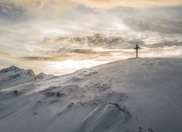
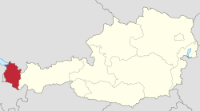
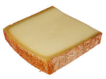
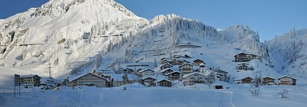
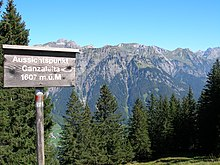

Intro
Vorarlberg (German pronunciation: [ˈfoːɐ̯ʔarlbɛrk]) is the westernmost federal state (Bundesland) of Austria. It has the second-smallest area after Vienna, and although it has the second-smallest population, it also has the second-highest population density (also after Vienna). It borders three countries: Germany (Bavaria and Baden-Württemberg via Lake Constance), Switzerland (Grisons and St. Gallen), and Liechtenstein. The only Austrian state that shares a border with Vorarlberg is Tyrol to the east.
The capital of Vorarlberg is Bregenz (29,806 inhabitants), although Dornbirn (49,278 inhabitants) and Feldkirch (33,420 inhabitants) have larger populations.[2] Vorarlberg is also the only state in Austria where the local dialect is not Austro-Bavarian, but rather an Alemannic dialect; it therefore has much more in common culturally with (historically) Alemannic-speaking German-speaking Switzerland, Liechtenstein, Swabia, and Alsace than with the rest of Austria, southeastern Bavaria, and South Tyrol.
Vorarlberg is almost completely mountainous and has been nicknamed the ‘Ländle’ meaning ‘small land’.

Geography

The main rivers in Vorarlberg are the Ill (running through the Montafon and Walgau valleys into the Rhine), the Rhine (forming the border with Switzerland), the Bregenzer Ache and the Dornbirner Ach. One of the shortest rivers is the Galina. Important lakes, apart from Lake Constance are Lüner Lake, Silvretta Lake, Vermunt Lake, Spuller Lake, the Kops Basin and Formarin Lake; the first four were created for the production of hydroelectric energy. However, even before the dam for the power plant was built, Lüner Lake was the largest mountain lake in the Alps. Most of this hydroelectric energy is exported to Germany at peak times. At night, energy from power plants in Germany is used to pump water back into some of the lakes.
As there are several notable mountain ranges in Vorarlberg, such as the Silvretta, the Rätikon, the Verwall and the Arlberg, there are many well-known skiing regions (Kleinwalsertal, Arlberg, Montafon, Bregenzerwald) and ski resorts (Lech, Zürs, Schruns, Warth, Damüls, Brand, Kleinwalsertal and many more).
TOP
Economy
Location
For several years, the Vorarlberg economy has been performing well above the Austrian average. While the overall Austrian GDP in 2004 rose by 2.0% in real terms, Vorarlberg recorded an increase of 2.9%. This came as a surprise, particularly as the major trading partners in Germany and Italy did not fare well. Owing to this robust economic performance, Vorarlberg was able to boost its gross regional product in 2014 to 15.2 billion euros according to the Economic Policy Department of the Vorarlberg Chamber of Trade. This translates into a nominal increase of 3.4% (cf Austria as a whole +5.2%).[5] The regional product per inhabitant in Vorarlberg is 41,000 EUR, exceeding the Austrian national average by 8%. Vorarlberg and especially the Rhine Valley is one of the wealthiest areas in the world, with a very high standard of living. By far the biggest company in Vorarlberg is Alpla (plastic packaging), followed by Blum, Grass, Gebrüder Weiss (transport and logistics), Zumtobel Group (lighting systems), Doppelmayr (cablecars), Rauch (beverages) and Wolford (textiles).
Agriculture
In addition to the flourishing textile, clothing, electronics, machinery and packing materials industries of the Alpine Rhine Valley, there is also a broad agricultural base, especially in the Bregenz Forest (Bregenzerwald), which is noted for its dairy products (especially due to the "KäseStrasse Bregenzerwald",[8] an association of farmers, restaurateurs, craftspeople and traders promoting the Bregenz Forest agriculture and its local products) and tourism.
TOP
Culture
Language
Owing to their location isolated from the rest of Austria, most people in Vorarlberg speak a very distinct German dialect that other Austrians might have difficulty understanding, since the dialects in the rest of Austria form part of the Bavarian-Austrian language group, whereas the Vorarlberg dialect is part of the Alemannic dialect continuum. Alemannic dialects are also spoken in Liechtenstein, Switzerland (as Swiss German), Baden-Württemberg, the south west of Bavaria and the Alsace region of France. The Vorarlberg dialect is further divided into a number of regional sub-dialects (e.g. that of the Montafon, the Bregenz Forest and Lustenau are some of the most distinct) which tend to differ considerably from each other. In fact even within these regions the dialects may vary from one town or village to the next.
Cuisine
The influence of the Alemannic cuisine of neighbouring countries works more on Vorarlberg cuisine than Austrian cuisine. Cheese and other dairy products play a major role in traditional Vorarlberg meals. Typical dishes from the Vorarlberg region are: Käsespätzle or Käsknöpfle (noodles of flour and eggs with cheese and onion), Riebel (dish of corn and wheat semolina, served spicy or sweet), Flädlesuppe (broth with savoury pancake strips), Grumpara mit Käs (peel pastry with cheese), Öpfelküachle (apples baked in pancake dough, topped with sugar and cinnamon). Mostbröckle (pickled and smoked sausage), originally from Switzerland, is also a very popular product.

Regional dairy products
TOP
Tourism
The tourist industry employs a considerable number of Vorarlbergers. There are around 12,000 employees working in this industry which represent approximately 11% of the total workforce (107,575 in 2015). Arrivals are slightly higher in winter (1.23 million in 2015) than in summer (1.14 million in 2015). The real difference lies in overnight-stays indicating that Vorarlberg is a strong winter destination. Overnight-stays in winter reach as high as 5.11 million which is quite large when compared to the summer season with 3.7 million overnight stays.

Winter
The greatest tourist attractions are the mountains and the numerous ski resorts. In the cold season, winter sports enthusiasts will find ideal conditions for their favourite sport: skiing, cross country skiing, freeriding, snowboarding, ice skating, sled dog rides, carriage rides, tobogganing, snow and fun parks.
Vorarlberg's largest ski resorts include
- Ski Arlberg
- Stuben am Arlberg
- Lech-Zürs and Oberlech
- Warth and Schröcken
- Silvretta Montafon (Ski area)
- Kleinwalsertal
- Brandnertal
- Damüls-Mellau (Ski area)

Summer
In the summer, mountain sports like hiking, mountain biking, climbing and trail-running play a big role in Vorarlberg's tourism. In total, Vorarlberg has more than 5,500 kilometers of hiking trails in different heights for both experienced and inexperienced walkers. Many ski areas operate cable cars throughout summer which makes them ideal for mountaineers.
All over Vorarlberg, theme hikes are being offered, e.g., culinary hikes, herbal walks, educational hikes for children, and night walks. The theme route "Gauertaler AlpkulTour", which extends through the cultural landscape of the Montafon in the Rätikon mountains, is a popular walking route among tourists. Lake Constance is a pivot for hikers, pilgrims, fishers and bird watchers. For a long time, it has served as a reference point for important pilgrims' paths, including the Lake Constance walking path, parts of the pilgrimage route to Santiago de Compostela and the European hiking routes E1, E4 and E5.
Offering some 1,500 kilometers of marked mountain bike trails, Vorarlberg attracts cyclists of all skill levels. Guided mountain bike tours are held in the Brandnertal and Klostertal. The Bregenzerwald bike school offers all kinds of bike-related activities including bike camps, technique courses and racing bike tours.
TOP